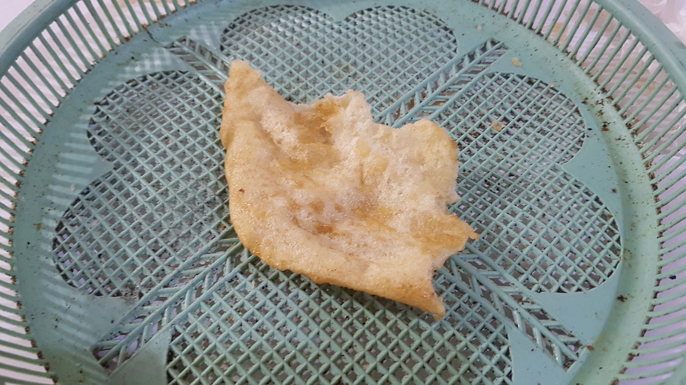
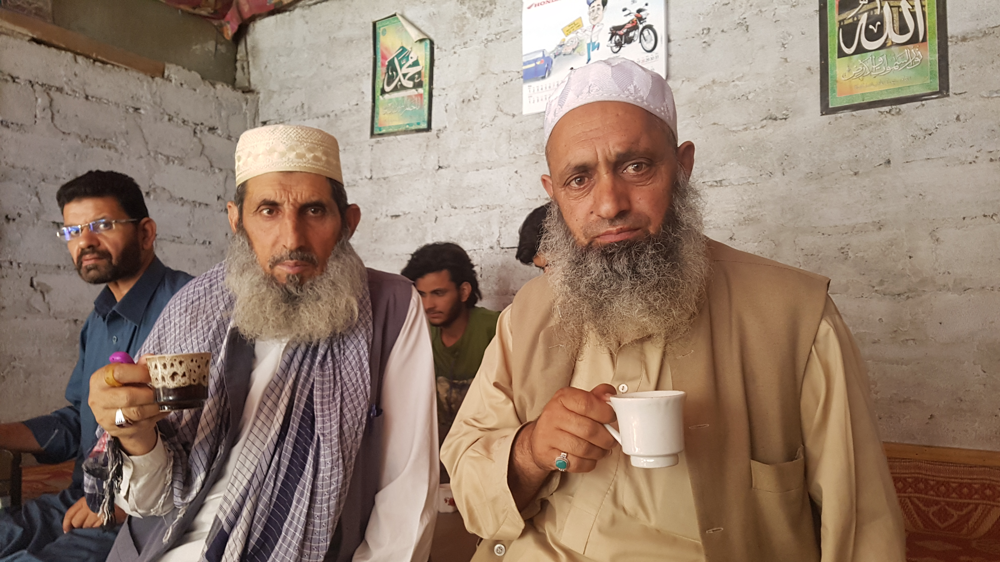
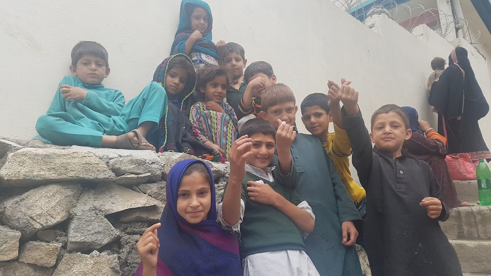
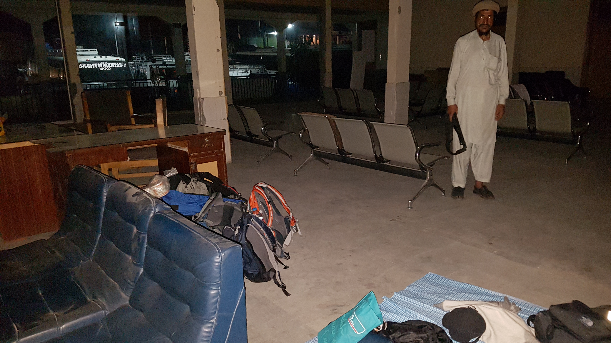

결국은 사람
2017년 05월 22일
파키스탄

차가 멈췄는데 아침을 먹으란다. 생각보다 꽤잤나보다 시간을 보니 4시반이다. 더 잘 수 있었는데 비몽사몽 식당으로 들어갔다. 때가 꼬질꼬질하게 낀 그릇에 프라타와 짜이가 나왔다. 그걸 또 아무렇지도 않게 먹고 있는 내 모습이 참 대견 스러웠다. 나도 참 많이 변했다. 한 아저씨가 계속 친근하게 우리를 도와줬다. 이들의 친절 덕분에 하는말이 모두 신뢰가 간다.

식사를 마치고 다시 버스를 탔다. 자다 깨다를 반복하다 7시에 차가 멈췄다. 잠깐 쉬는줄 알았는데 도로가 막혔단다. 언제까지 정차하는지 물어봤는데 한 두시간 걸린다고 한다. 나는 일단 화장실이 급해서 화장실로 가기로 했다. 어제 저역을 같이 먹었던 아저씨가 화장실에 데려다 줬다. 간신히 위급상황을 모면하고 돌아오는 길에 아저씨가 티 좋아하냐고 한잔하겠냐고 한다. 그래서 나는 넉살좋게 좋다고 했다. 혹시나 했는데 역시나 아저씨가 짜이를 사주셨다. 파키스탄 사람들 왜이렇게 친절하고 좋은지 모르겠다.

까페에서 짜이를 마시던 할아버지들 무척 이국적인 느낌이 들었다.
짜이를 마시고 다시 버스로 돌아왔다. 역시 버스는 한발짝도 움직이지 못했다. 버스에 돌아왔는데 총을 든 우리 승무원 친구가 자기없이 돌아다니지 말라고 당부를 한다. 미안하기도 하고 한편으로 기분이 좋았다. 이렇게 현지인에게 보호 받는다는 느낌이 들었다. 밖에 돌아다니지 말고 버스 안에만 있으라고 한다. 수많은 버스가 이 길에 정체되어 있는데 여행자는 우리박에 없다. 모두 현지인이고 우리가 돌아다니면 수 많은 사람들이 쳐다본다. 그래서 무하마드는 불안한가 보다.
우리를 보호해주던 친구 무하마드, 나와 동갑이다. 총을 든 보디가드가 생긴 기분이었다.
우리는 찜통 같은 버스 안에서 계속 있었다. 땀이 멈추질 않았다. 특히 엉덩이에 땀이 계속 나서 괴로웠다. 언제 출발할 수 있는지 물어보면 1시간 정도 뒤에 될거라고 한다. 그래서 한시간 뒤에 또 물어보면 또 한시간 뒤에 도로가 열릴거라고 한다. 돌아버릴뻔.
그렇게 5시간넘께 정체되어있었다. 너무 더워서 그런지 무하마드가 반대쪽 계단에 앉아있어도 된다고 한다. 거기에는 히잡을 둘러쓴 여성들과 아이들이 앉아있었다. 역시 어딜가나 애들은 순수하고 귀여운것 같다. 우리를 보고 엄청 부끄러워 하다가 우리에게 점점 다가오는데 이런것이 애들의 매력인것 같다. 그렇게 거기서 아이들과 즐거운 시간을 보내고 사진도 찍었다.
계단에 앉아있으니 사람들이 돌아다니면서 같이 사진을 찍자고 한다. 그래서 몇번 사진을 찍었더니 무하마드가 와서 찍지 말라고 한다. 듬직한 녀석.

한번은 버스 앞에서 같은 버스에 탄 사람들과 이야기를 했다. 나는 또 파키스탄이 위험한줄 알았는데 전혀 그렇지 않다. 여기서 수많은 사람들에게 도움을 받았다. 파키스탄 사람들 월드 베스트다. 라고 신나게 떠들었다. 그리고 무하마드가 가진 총을 보고 한국에서는 총을 보기 쉽지 않은데 버스에서 총을 봐서 무척 놀라웠다라고 떠들었다.그렇게 현지인들이 나를 둘러싸고 즐겁게 이야기했는데 전혀 위축되지 않고 떠들고 있는 내가 대견스러웠다.
점심시간이 되어도 버스는 움직일 생각을 안했다. 배고파서 현지인들이 있는 식당에 들어갔다. 다행이도 SUDO 라는 마을앞에서 멈춰서 식당이나 화장실을 이용할수 있었다. 만약 그냥 길에서 멈췄으면 정말 힘들었을것이다. 무하마드와 동행하며 식당에 들렀다. 짜이를 사준 아저씨와 또 동행했다. 이 아저씨가 같이 동행 해줘서 더 안전함을 느꼈다. 근데 사실 나는 이미 이 수많은 현지인 틈에서 안전함을 느꼈기 때문에 걱정이 없었다. 누가 파키스탄이 위험하다고 하나. 난 아직까지도 전혀 못느끼겠다.
다시 버스로 가는길 지나가는 사람마다. 인사하고 사진 찍고 악수하고 나를 환대 한다. 손님으로써 이렇게 환대를 받는데 파키스탄을 싫어할 수 가 있겠나. 파키스탄이 너무 좋다. 다른것 때문이아니라 단지 사람들 때문이었다. 24시간동안 동거동락 하니 친해짐 가족 느낌이었다.
약 30시간동안 같은 버스를 탔던 사람들. 나이대가 그리 높지 않다. 우리보다 약간 많은 정도. 파키스탄 사람들도 한국의 아저씨들 처럼 사진찍을 때 경직된다. 평상시엔 그렇지 않은데 사진기만 들이대면 표정이 굳는다. 엄청 웃김.
처음에는 이 버스이동이 네팔-소나울리까지 이동하는 버스만큼 힘들지는 않았다. 하지만 정체 시간이 점점 길어져 9시간에 다다르니 이 버스가 제일 힘든 버스라는것을 인정할 수 밖에 없었다. 덥고, 엉덩이에는 땀이 나고, 먼지바람이 막 들어오고, 옆에있는 친구의 쩍벌 때문에 괴로웠다. 육체적으로는 그렇게 힘들었다. 하지만 가장 현지인과 친해진 버스이동 구간이었다. 그것때문에 무척 즐거운 시간이기도 했다. 신기했다.
S와 J는 버스 이동 내내 식사를 하지 않았다. 여자라서 화장실 이용이 어려워 우려되서 그런것같다. S가 수박을 먹고 싶다고 어디서 파냐고 물어봤는데 한 아저찌가 수박을 떡하니 사왔다. 진짜 감동이다. 파키스탄 사람들 너무 좋다.
9시간을 대기한 끝에 도로가 다시 오픈이 되었다. 드디어 버스가 이동한다. 그래도 아직도 3시간 가량 더 이동해야 한다. 드디어 마지막 체크 포스트 우리는 버스에서 내려 외국인 등록을 했다. 총을 든 경찰이 AK-47소총을 들고 있길래 내가 흥미를 가졌다. 나도 군대에서 2년동안 총을 다뤘다고 했더니 그도 무척 궁금해 했다. 생각해보니 나도 군인이었고 총을 쏴봤던것 이다. 그렇게 총에 대해서 같이 떠드니 재미있었다.
그렇게 개 고생한 끝에 버스는 Gilgit 버스 정류장에 도착했다. 길깃 에서도 사실 2시간 버스를 타야 알리 바마드에 도착할 수 있고 알리 바마드에서 20분정도 책시를 타고 올라가야 훈자에 도착할 수 있다. 벌써 12시였다. 그래서 우리는 하루를 길깃에서 숙박하기로 했다. 버스 안에서 정들었던 사람들과 포옹을 했다. 도착 수시간 버스에서 만난사람들과 포옹을 핲 정도로 친해질 수 있다는게 신기하고 감동적이었다. 우리는 그렇게 들 헤어졌다.
다행이 아까 수박을 사왔던 아저씨가 우리 호텔을 알아봐줬다. 그들 아니었느면 우리가 이 깜깜한 밤중에 직접 알아봐야했는데 거의 불가능한 일이었다. 한 호텔에 도착했는데 방이 없다고 한다. 그리고 나머지 호텔도 먼거리를 걸어서 도착했지만 이용할 수 없었다. 파키스탄 호텔에 외국인이 묶으려면 시큐리티가 있어야 한다고 한다. 그래서 파키스탄에 여행자가 묶을 수 있는 숙소가 제한적인것 같다. 정부의 허가?등을 받아야 하지 않나 싶다.
그렇게 우리는 그 밤중에 숙소를 구할 수 없었다. 결국 버스정류장에서 노숙을 하기로 했다. 그랬더니 그 아저씨가 어떤 사람한테 이야기해줘서 터미널 실내로 들어갈 수 있게 해줬다. 최고감동 ㅜ 그 안에는 간이 쇼파도 있었고 화장실도 있었다. 게다가 총을 든 시큐리티 가드도 있었다!! 그 아저씨가 오늘 밤 우리를 지켜주기로 했다. 정말 파키스탄 최고 ㅜ
그렇게 이도 닦고 세수도 하고 발도 닦았다. 나는 돗자리를 깔고 바닦에서 잤다. 그렇게 길고 길었던 하루가 마무리 되었다. 육체적으로 매우 고단했지만 사람들 때문에 행복했던 하루였다.

우리가 머물렀던 버스 터미널 모습과, 우리를 지켜줬던 가드 아리프 아저씨. 사진이 좀 무섭게 나왔는데 전혀 그런 분위기가 아니었음.